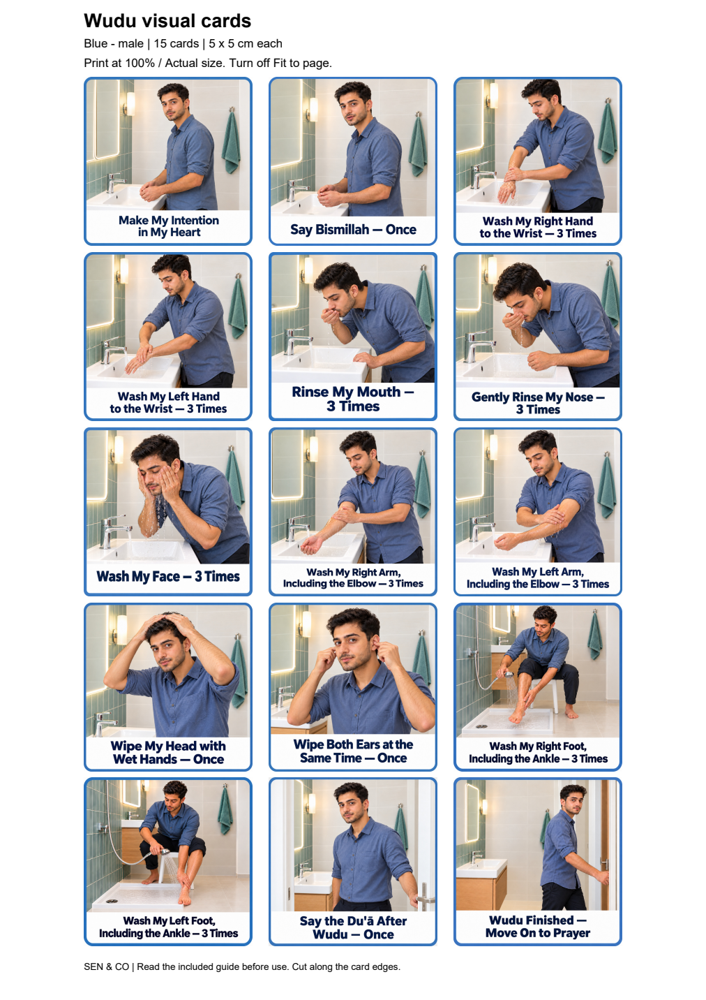
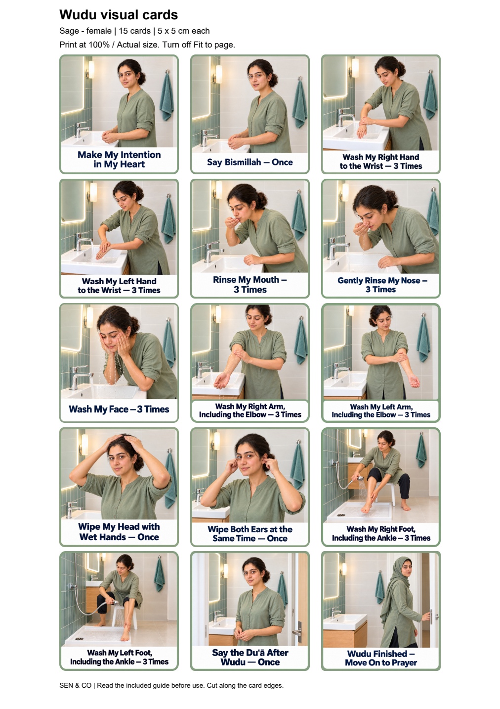

FREE DOWNLOAD
Blue male set
15 English visual cards with no step-number badges. Repetition counts remain in the captions.
Complete ZIP: approximately 28 MB. Includes the A4 PDF, 15 PNGs and a read-me guide.


FREE RESOURCES · TEENS & ADULTS
A visual prompt for each step of your wudu routine.
Choose blue male or sage female artwork. Both sets include the same 15 steps, with a printable A4 PDF and individual PNG cards for digital use.
5 × 5 cm per printed card. Completely free, with no checkout or email sign-up.
FREE DOWNLOAD
15 English visual cards with no step-number badges. Repetition counts remain in the captions.
Complete ZIP: approximately 28 MB. Includes the A4 PDF, 15 PNGs and a read-me guide.

FREE DOWNLOAD
15 English visual cards with no step-number badges. Repetition counts remain in the captions.
Complete ZIP: approximately 27 MB. Includes the A4 PDF, 15 PNGs and a read-me guide.

The longer captions are small at this compact size. On-screen PNG size depends on your device; the supplied PDF sets the printed card dimensions.
These cards show a commonly taught Sunni wudu sequence, including recommended practices. Washing three times is recommended, not a condition for valid wudu. Intention is in the heart; it does not need to be spoken. The dua after wudu is recommended. Follow your own school's guidance where details differ.
Use the numbered filenames to follow the sequence. Right and left refer to the person performing wudu. The cards show one moment of each action, rather than every movement. The stated count is a stopping point, not a prompt to restart.
Read the included guide before use. The photographs were generated with AI and depict fictional adults.
Explore more visual supports in the resource shop, or contact the studio about a custom resource.